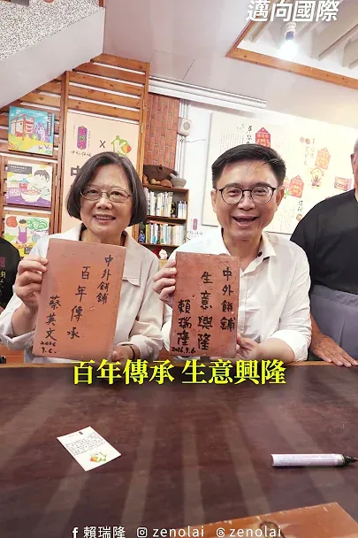
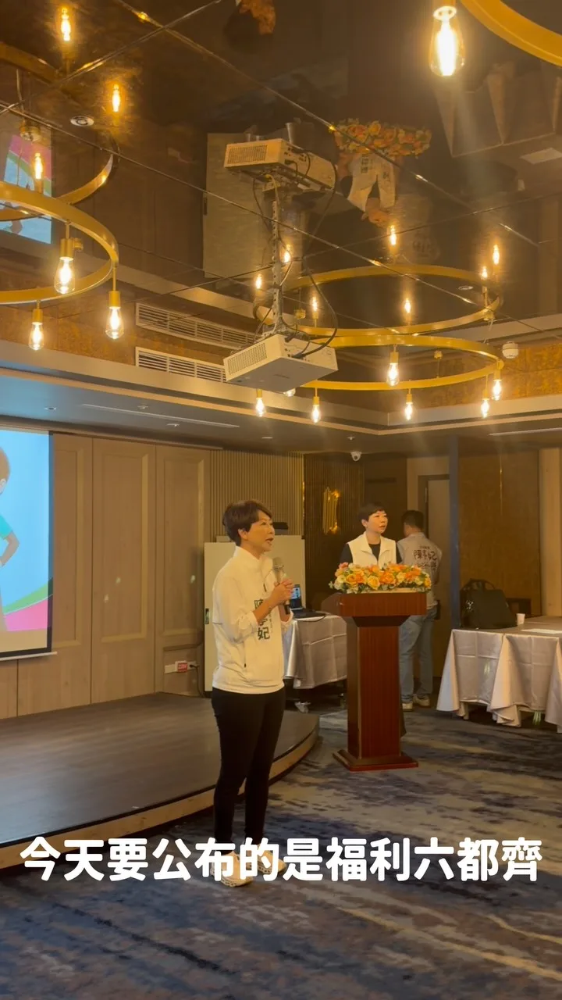
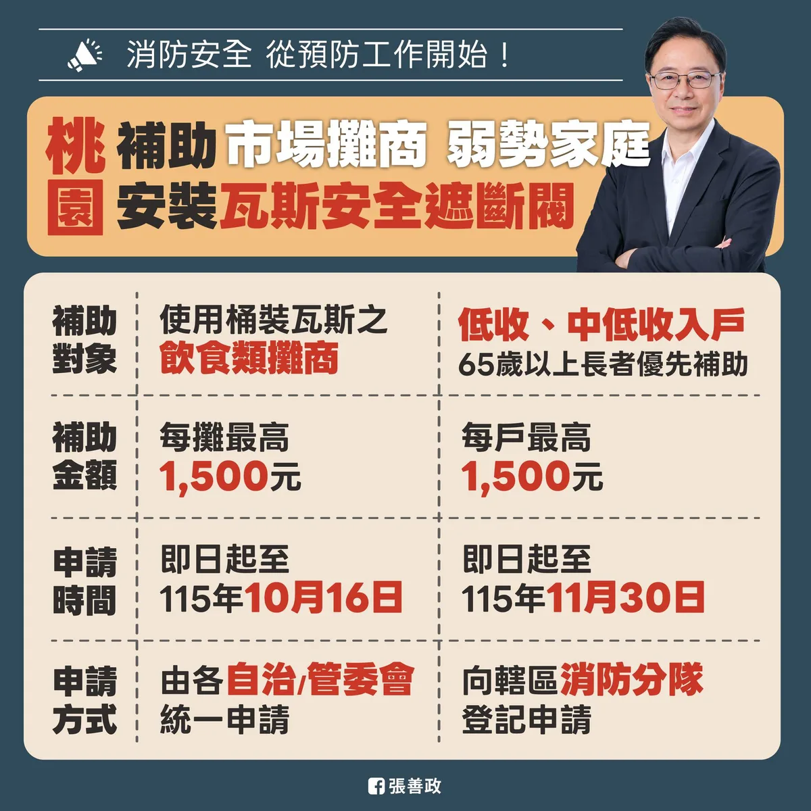
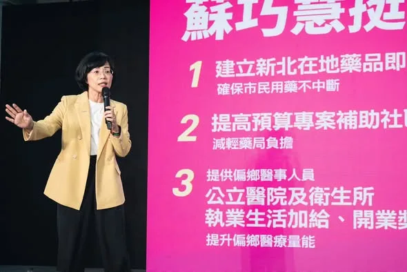
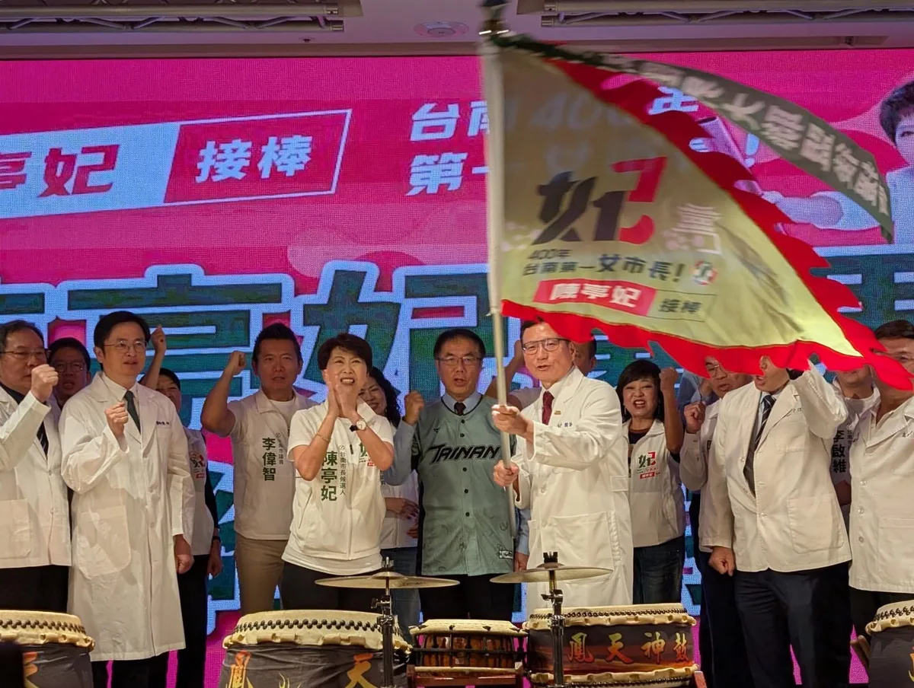

賴瑞隆賴瑞隆

和蔡英文總統一起動手做月餅，用行動支持庇護工場，讓善的循環延續、讓今年中秋充滿溫暖！🥮
Posts

和蔡英文總統一起動手做月餅，用行動支持庇護工場，讓善的循環延續、讓今年中秋充滿溫暖！🥮

@schuanglawyer:我和何志偉副秘書長，一起到觀音愛心家園「拜師學藝」！ 小老師們手很巧，紙盒摺得又快又工整。親手烘焙的手工點心香氣四溢，主任還沒介紹完，志偉就忍不住開動，我也默默嗑光一整盒，真心推薦👍 每一份點心禮盒，都是他們靠雙手自立生活、踏實前行的證明。 不只中秋節，平時也歡迎市民朋友多多支持桃園各家庇護工場，給這群認真的寶貝更多被看見的舞台💖

@hsiehlungchieh:＃十大新政全面升級 ＃育兒三箭育兒無憂 🏹幼兒日常免費： 「0到3歲嬰幼兒尿布免費」是龍介4年前就提出的重要政見。養囝仔，除了奶粉，尿布也是每天少不了的固定開銷。 台南本身就有優質尿布廠商，未來由市府大量採購、降低成本，直接讓嬰幼兒免費使用，實實在在替新手爸媽省下一筆育兒開銷、減輕養育負擔。 🏹醫療健保免費： 孩子健康，是每個父母最掛心的代誌。龍介提出「0到6歲幼兒健保全額免費」，健保費由市政府補助，替家庭多扛一點，讓台南孩子從出生到上小學前，不用再由家長負擔健保費，也讓每一個囝仔都能安心、健康長大。 🏹公托機構翻倍： 目前台南僅有19處公共托育機構，包括6家公設民營托嬰中心、13家公共托育家園。龍介上任後，要讓公托數量直接翻倍，擴大托育量能，讓爸媽不再為了搶名額傷腦筋。 同時活化閒置校舍，轉型公托空間，就近提供托育服務，方便家長接送，讓孩子有更安全、安心的成長環境。 少子化，不是喊幾句「鼓勵大家多生」就能解決。年輕人不是不喜歡孩子，而是從孩子一出生開始，奶粉、尿布、健保、托育，每一項都是錢，都是爸媽每天要面對的現實壓力。


深深感謝無數個家庭背後，撐起日常的每一位照顧者。未來我希望帶領市府 #照顧照顧者，全力做大家的靠山！ 我們要簡化行政流程、加發津貼與進修補助，提供最實質的支持。#新時代照顧也要升級！我們要發展 #AI智慧照顧，運用科技減輕照顧負擔、推動居家服務與輔具一次到位，帶入專業復能服務，出院照顧不再手忙腳亂。 新北邁向新時代，我們一起讓這座城市更溫暖、更宜居！

今天午後，我和總統府何志偉副秘書長 @ho_art_501 走進觀音愛心家園，空氣裡瀰漫著剛出爐的糕點甜香，耳邊傳來純真燦爛的笑聲。 我和志偉坐下來，向憨兒寶貝學習組裝中秋紙盒。看著他們小心翼翼對齊摺線、壓平邊角，眼神裡滿是專注。 前陣子外頭有些紛擾與考驗，但他們沒有退縮，因為手裡摺的不只是紙盒，更是自立生活的尊嚴。遞出的每一塊點心，都是想跟世界分享的心意，而且真的非常好吃，連不常吃甜點的我都一口接一口。 一筆訂單，對大家來說只是日常的選擇，對他們而言，卻是證明自我價值的舞台。所幸各界的善意及時匯聚，觀音愛心家園今年中秋訂單已額滿，我和志偉也特別預訂了年節禮盒，要把這份支持延續下去。 除了民間的熱心，地方政府更該主動搭起橋梁，串聯公部門採購與企業資源，把一次的幫助轉化為長遠的機會。 一座城市的溫度，不是看它有多少高樓大廈，而是看它願不願意為走得慢的人留一盞燈。 未來的桃園，不僅要大步建設，更要成為一座溫暖、包容，讓每個人都能活出尊嚴跟價值的城市❤️

家庭不是自己撐！陳亭妃拋「福利六都齊」 加碼補齊台南市全齡照顧！

臺中「新」家鄉，#心扎根夢飛翔 🌏 今天和新住民朋友一起手持 #臺中新家鄉 看板，喊出我們共同的期待，讓每個選擇臺中的人，都能安心扎根、實現夢想！ 我分享了一位新加坡朋友的故事（ps.這段故事可以到臺中味網站觀看喔 https://taichungway.tw/ ） 他因為愛情留在臺中，創業經營酒吧，更站上國際舞台。這些來自不同地方的文化與創意，讓我們的「臺中味」更加精彩！ 啟臣要成立 #國際合作發展委員會 ，邀請新住民一起參與；推動 #新住民二代國際領航計畫 ，讓多元文化成為青年走向世界的優勢。透過創業貸款利息補貼，讓好手藝變成好生意，並升級多語法律與心理諮詢服務，支持大家安心打拚。 臺中走向世界，也要讓來自世界的朋友，在這裡找到家的溫暖。無論來自哪裡，我們都是臺中人！❤️ #臺中升級 #幸福加給 #新住民 #幸福旗艦城 #臺中啟程 #打造旗艦城

北區，是臺中最早發展的區域之一，我以前就讀的臺中一中就在這裡，高中三年的時光，到現在都還清晰地映在腦海裡。北區對我來說，不只是熟悉，更有著滿滿的青春回憶。 改變城市的目的，是要讓民眾生活更進步。從公共設施改善、都市更新，到銀髮住宅安全與科技導入，不僅是要讓城市不斷進步，還要讓長輩住得安心、年輕人打拚放心。未來，我們會一起努力，讓城市機能更完善、生活更便利！ #臺中啟程 #打造旗艦城 #北區再升級

#三民區 曾是高雄最繁華的起點，我要讓它成為高雄再起飛的原點！ 今晚廟口音樂會來到 #三鳳宮 ，對我有著特別的意義。四年前，我第一場廟口開講就在三鳳宮，那天細雨不停，但階梯上依然坐滿了人，陪伴我的議員 #童燕珍、 #黃柏霖、 #黃香菽 都在身旁；四年後再回到這裡，看著熟悉的人群與熟悉的廟埕，心中只有更多感謝，也更堅定要為高雄改變的決心。 今晚特別感謝「勇媽」嘉義市長 勇媽阿惠 - 黃敏惠，以及 #高雄市嘉義同鄉會 蔡崇銘理事長率領幹部及成員到場相挺。黃市長說，她父親過去就住在三民區大順二路，與三民有著特別的緣分。她更以17年的市政經驗勉勵我，四年前雖然落選，但我沒有離開高雄，而是持續走遍每個角落、認真為高雄打拚。這份鼓勵，我會一直記在心裡。 三民區對我而言，承載著一個屏東鄉下孩子的夢想。小時候，高雄車站是令人嚮往的繁華世界；哥哥讀雄中、叔叔讀高醫，三民區幾乎就是我全部的世界。 然而今天的三民區，卻面臨「兩個老」的挑戰：一個是高齡化，65歲以上人口數高達7.3萬人；另一個是老屋問題，高雄超過40年的住宅近6萬戶，都集中在三民區，曾經最繁華的地方，不該在時代變遷中逐漸失去光彩。 因此，我提出商圈活化計畫，盤點高雄車站周邊的長明商圈、後驛商圈等重要據點，以更友善的創業環境與租金條件吸引年輕人進駐，讓商機重新回來；推動都市更新與老屋整建，在都更完成前提供必要補助，改善外牆、水管等老舊問題；針對住在老公寓的長輩，補助設置爬梯機，讓長輩能自由、安全的出門。 我也主張將敬老卡點數由600點提高到1000點、擴大使用範圍，讓長輩買菜、看病更方便；面對高雄4萬多名失智長者，推動智慧手環協助照護家庭，因為我相信：「記憶會走遠，但愛不會迷路。」 高雄有山、有海、有港，更應該有讓孩子看見世界的眼界。我希望成為一位重視教育的市長，提升教育經費，培養下一代的國際觀與競爭力，讓高雄的孩子勇敢走向世界。 從商圈活化、老屋重建，到治水改善、幸福川整體環境升級、自行車路網串聯，我希望讓高雄不只是宜居，更是一座充滿希望與活力的城市。讓年輕人住得起、買得起、養得起；讓長輩有照顧、有尊嚴；讓資源更平均，讓機會更公平。 黃敏惠市長今晚說：「投給柯志恩，就是投給善良、正向的力量。」我深受感動。高雄值得更好的未來，高雄也值得再一次站上世界舞台。 — 特別感謝高雄市嘉義同鄉會今天的共襄盛舉，包括蔡崇銘理事長、黃瑞榮副理事長、劉鴻德常務理事、邱政雄常務監事、林金藝理事、李文華執行長、黃明治理事、鄧樹欉理事、郭明哲理事，以及各位里長前輩仕紳。


近五十家產業、職業工會幹部及基層勞工代表，一起成為「沈伯洋勞工後援會」最關鍵的力量！ ⠀ 今天大家願意來到現場，願意把對台北、對勞動環境的期待交給我，這份信任，我會牢牢記得。 ⠀ 謝謝 陳時中政委、 洪申翰 Sun-Han部長、 林月琴 Yueh-Chin委員到場支持， 顏蔚慈 議員、 陳賢蔚 議員擔任大會主持人。 謝謝 #林肇俊 理事長、 #戴國榮 理事長分別擔任職業工會及產業工會後援會總會長並接受授旗，以及 #鄭力嘉 副總會長代表致詞。 也謝謝每一位工會幹部與基層勞工夥伴的力挺！ ⠀ 我要把勞工的聲音帶進市政府。 讓每一份撐起台北日常的勞動，都能被看見、被尊重； 也讓每一位在這座城市打拚的人，都有餘裕照顧自己與家人，安穩地生活。 ⠀ 我認為，市府本應該做工會及勞工的後盾。 ⠀ 市府應該簡化工會的行政作業、媒合共享辦公空間，也要派「AI 教練」直接進入不同產業，陪伴大家找到真正用得上的工具。面對無人駕駛與 AI 帶來的轉型，不能等衝擊發生，再叫勞工自己想辦法。 ⠀ 戶外勞工需要遮蔭與休息的空間、通勤者需要安全的道路與人行道、勞工家庭需要負擔得起的住宅。 ⠀ 中央的制度與資源要真正送達市民手中，地方政府就是最後一哩路。 ⠀ 請大家持續向身旁朋友介紹沈伯洋。 11月28日，讓沈伯洋成為你的市長！ ⠀ #台北順起來 #你的市長沈伯洋
@pumashen:一座城市的進步，不只是亮眼的那一面，更要看每一個需要支持的人，能不能被好好接住。 ⠀ 社會福利，是衡量一座城市溫度的尺。 台北擁有全台最豐厚的財政資源，長照涵蓋率卻落後全國平均。 有些長輩，一個人住在沒有電梯的公寓裡，出門變得不容易；有些家庭，把時間都給了生病的家人，自己卻沒辦法好好休息。 ⠀ 這些需要，不該被漏接。 ⠀ 這段時間，我們和許多社福團體、第一線工作者反覆討論，把大家的意見，整理成一套從孩子到長者的社福政策。 ⠀ 因此，我提出「台北社福藍圖」，從五大族群出發，為每一位市民築起安全網。 ⠀⠀ ▻跟長輩一起，在熟悉的地方好好生活 ⠀ 把敬老卡升級為「城市探索護照」，串連健身房、藝文活動，讓長輩每天都有出門的理由。 健身小巴開進社區，在宅醫療與社會處方箋2.0走進家裡。 針對老舊公寓，擴大爬梯機服務、成立到宅修繕服務團，並推動老人租屋友善計畫。 增加住宿型長照機構，發放彈性臨時托老券，讓照顧者有喘口氣的空間。

我和何志偉副秘書長 @ho_art_501 ，一起到觀音愛心家園「拜師學藝」！ 小老師們手很巧，紙盒摺得又快又工整。親手烘焙的手工點心香氣四溢，主任還沒介紹完，志偉就忍不住開動，我也默默嗑光一整盒，真心推薦👍 每一份點心禮盒，都是他們靠雙手自立生活、踏實前行的證明。 不只中秋節，平時也歡迎市民朋友多多支持桃園各家庇護工場，給這群認真的寶貝更多被看見的舞台💖

我和黃家齊議員 @jack790218 都熱愛打籃球🏀這次就用一場三對三，來聊聊我們理想中的「運動城市」！ 世杰要打造「10分鐘運動生活圈」，從孩子的多元運動社團、年輕人的戶外運動空間；到長輩、身障朋友的分齡運動與共融據點；專業選手的培訓、獎勵、醫療照護也要全面升級，讓全民都能動、選手放心拚💪🏻更要打造「桃園全民運動季」，把桃園的運動品牌推向國際，用運動連結世界、讓世界看見桃園！ 運動心桃園，幸福動起來💖Taoyuan, This is for you!

何欣純政策許願池！敬老愛心卡大升級，國中小孩子營養午餐不分公私立學校通通免費，何欣純「政策許願池」好像還蠻好的！新台中，交給何欣純！

@hsiehlungchieh:超徵稅收應合理的分配「還稅、國防、民生、社會福利」


@chen_tingfei:六都有的，台南不能少！ 今天我與台南隊的夥伴站在一起，提出「福利六都齊」Al政見。從孩子的成長、青年的未來、家庭的支持，到長者的照顧，人民的每一個人生階段，都值得被好好接住！ 未來該補的，我們一項一項補齊；該做得更好的，我們就繼續往前。讓每一個家庭，都能在這座城市安心生活、幸福成長。


最近，我核准動用第二預備金，要把傳統市場、夜市的消防安全再往前提升一步。 去年南門市場發生火災後，我們一直持續追蹤市場、夜市的消防安全。除了消防設備、逃生動線及管理機制之外，攤商普遍使用的 #桶裝瓦斯，也是我們這段時間持續檢視的重點。 經過盤點，目前桃園公有零售市場及公有、列管攤販集中區，共有592攤使用桶裝瓦斯。 為了降低瓦斯外洩及火災風險，市府將補助攤商加裝「#瓦斯安全遮斷閥」，當偵測到瓦斯流量異常或管線脫落時，就能自動切斷瓦斯，多一道安全保障。 每攤最高補助1,500元，即日起至10月16日止，可由自治會、管委會協助彙整資料後提出申請。 除了市場及夜市攤商之外，居家瓦斯安全同樣不能忽視。 因此，市府也同步補助低收入戶及中低收入戶更換瓦斯安全遮斷閥，每戶最高補助1,500元，並優先協助65歲以上長者，即日起至11月30日止，可向轄區消防分隊登記申請。 這兩項補助原本規劃明年辦理，但我認為，能夠提前預防的事情，就不要等到明年。 因此，我決定動用第二預備金，讓有需要的攤商及家庭今年就能完成設備裝設。 把風險降低在事故發生之前，這也是市府決定提前推動這項計畫最重要的原因；我們會用更謹慎為民的心，讓市民的生活環境更安全。

北區，是臺中最早發展的區域之一，我以前就讀的臺中一中就在這裡，高中三年的時光，到現在都還清晰地映在腦海裡。北區對我來說，不只是熟悉，更有著滿滿的青春回憶。 改變城市的目的，是要讓民眾生活更進步。從公共設施改善、都市更新，到銀髮住宅安全與科技導入，不僅是要讓城市不斷進步，還要讓長輩住得安心、年輕人打拚放心。未來，我們會一起努力，讓城市機能更完善、生活更便利！ #臺中啟程 #打造旗艦城 #北區再升級


#三民區 曾是高雄最繁華的起點，我要讓它成為高雄再起飛的原點！ 今晚廟口音樂會來到 #三鳳宮 ，對我有著特別的意義。四年前，我第一場廟口開講就在三鳳宮，那天細雨不停，但階梯上依然坐滿了人，陪伴我的議員 #童燕珍、 #黃柏霖、 #黃香菽 都在身旁；四年後再回到這裡，看著熟悉的人群與熟悉的廟埕，心中只有更多感謝，也更堅定要為高雄改變的決心。 今晚特別感謝「勇媽」嘉義市長 勇媽阿惠 - 黃敏惠，以及 #高雄市嘉義同鄉會 蔡崇銘理事長率領幹部及成員到場相挺。黃市長說，她父親過去就住在三民區大順二路，與三民有著特別的緣分。她更以17年的市政經驗勉勵我，四年前雖然落選，但我沒有離開高雄，而是持續走遍每個角落、認真為高雄打拚。這份鼓勵，我會一直記在心裡。 三民區對我而言，承載著一個屏東鄉下孩子的夢想。小時候，高雄車站是令人嚮往的繁華世界；哥哥讀雄中、叔叔讀高醫，三民區幾乎就是我全部的世界。 然而今天的三民區，卻面臨「兩個老」的挑戰：一個是高齡化，65歲以上人口數高達7.3萬人；另一個是老屋問題，高雄超過40年的住宅近6萬戶，都集中在三民區，曾經最繁華的地方，不該在時代變遷中逐漸失去光彩。 因此，我提出商圈活化計畫，盤點高雄車站周邊的長明商圈、後驛商圈等重要據點，以更友善的創業環境與租金條件吸引年輕人進駐，讓商機重新回來；推動都市更新與老屋整建，在都更完成前提供必要補助，改善外牆、水管等老舊問題；針對住在老公寓的長輩，補助設置爬梯機，讓長輩能自由、安全的出門。 我也主張將敬老卡點數由600點提高到1000點、擴大使用範圍，讓長輩買菜、看病更方便；面對高雄4萬多名失智長者，推動智慧手環協助照護家庭，因為我相信：「記憶會走遠，但愛不會迷路。」 高雄有山、有海、有港，更應該有讓孩子看見世界的眼界。我希望成為一位重視教育的市長，提升教育經費，培養下一代的國際觀與競爭力，讓高雄的孩子勇敢走向世界。 從商圈活化、老屋重建，到治水改善、幸福川整體環境升級、自行車路網串聯，我希望讓高雄不只是宜居，更是一座充滿希望與活力的城市。讓年輕人住得起、買得起、養得起；讓長輩有照顧、有尊嚴；讓資源更平均，讓機會更公平。 黃敏惠市長今晚說：「投給柯志恩，就是投給善良、正向的力量。」我深受感動。高雄值得更好的未來，高雄也值得再一次站上世界舞台。 — 特別感謝高雄市嘉義同鄉會今天的共襄盛舉，包括蔡崇銘理事長、黃瑞榮副理事長、劉鴻德常務理事、邱政雄常務監事、林金藝理事、李文華執行長、黃明治理事、鄧樹欉理事、郭明哲理事，以及各位里長前輩仕紳。

非常感謝 #新北市藥師公會、#新北市藥劑生公會、#新北市西藥商業同業公會、#新北市西藥服務職業工會，新北四大藥業公會及工會今天站出來為我加油！我們在疫情期間完成口罩實名制、快篩發放、送藥到府等工作，共同守護國人健康。 未來，我希望有機會帶領市府 #照顧照顧者，以具體政策把優秀人才留在新北，#照顧更多市民朋友！ ✅ 市民用藥不中斷 建立「#新北在地藥品即時調度機制」，推動藥局間緊急相互調撥，並且由市立醫院擔綱關鍵藥品的備援庫存！ ✅ 藥局專案補助 調升現行「#新北健康守護站」預算，同時研擬補貼衛教宣傳、廢棄物清運等行政成本，減輕藥局負擔。 ✅ 山海城鎮醫事人員加給 針對醫療資源較匱乏的山海城鎮，提供衛生所與公立醫院醫事人員宿舍與 #生活加給，並透過 #開業獎金 鼓勵在地開業，充實醫療量能。 我會繼續和大家並肩作戰，讓新北29區的市民朋友都享有充足、平權且優質的醫療照護！

一座城市的進步，不只是亮眼的那一面，更要看每一個需要支持的人，能不能被好好接住。 ⠀ 社會福利，是衡量一座城市溫度的尺。 台北擁有全台最豐厚的財政資源，長照涵蓋率卻落後全國平均。 有些長輩，一個人住在沒有電梯的公寓裡，出門變得不容易；有些家庭，把時間都給了生病的家人，自己卻沒辦法好好休息。 ⠀ 這些需要，不該被漏接。 ⠀ 這段時間，我們和許多社福團體、第一線工作者反覆討論，把大家的意見，整理成一套從孩子到長者的社福政策。 ⠀ 因此，我提出「台北社福藍圖」，從五大族群出發，為每一位市民築起安全網。 ⠀⠀ ▻跟長輩一起，在熟悉的地方好好生活 ⠀ 把敬老卡升級為「城市探索護照」，串連健身房、藝文活動，讓長輩每天都有出門的理由。 健身小巴開進社區，在宅醫療與社會處方箋2.0走進家裡。 針對老舊公寓，擴大爬梯機服務、成立到宅修繕服務團，並推動老人租屋友善計畫。 增加住宿型長照機構，發放彈性臨時托老券，讓照顧者有喘口氣的空間。 ⠀ ⠀▻辛苦的中年朋友，也要好好被接住！ ⠀ 補助50歲以上市民一劑皮蛇疫苗；15–45歲免費心理諮商，市府再加碼3次，並擴大到65歲，每人6次。⠀ 推動職場友善政策2.0，以職代津貼補足人力，安心請假！⠀ 針對45歲以上的市民，提供職涯健檢、職務再設計與創業利息補貼。 ⠀⠀ ▻ 孩子成長的每一步，我們一起守護 ⠀ 0至6歲免費腸病毒疫苗；首推0至18歲親子同行卡每月600點。⠀ 成立兒少安全治理分析中心，事後通報變成事前預防，推動通學路安全計畫，守護孩子每天上下學。 ⠀ ▻給身障朋友最貼心的照顧，自在生活 ⠀ 成立無障礙城市設計中心，從家門口、人行道到公共運輸、建築，讓設施使用不再零碎！⠀ 補助罕病家庭家用不斷電系統，並提升身障女性參與公共決策的比率。 ⠀ ▻讓女性一起，守護自己的安全 ⠀ 引入「女性安全審計」，邀請不同年齡、身體狀況的女性，共同檢視公共空間安全。⠀ 建置女性身心健康一站式支持專線，陪伴大家走過心理健康、月經、孕產、更年期困難。⠀ 一座有溫度的城市，是每個人都能在熟悉的家園裡，活得安全、保障，充滿希望。 ⠀ 期待和大家一起，把台北變成這樣的城市。 #台北順起來 #你的市長沈伯洋

@prof.kochihen:四年前，我的第一場廟口開講從三鳳宮出發；再度回到這裡，初心沒變，決心更堅定。 曾經繁華的三民區，不該慢慢老去。 商圈活化、老屋更新、長輩照顧、幸福川環境提升；我要讓三民區重新發光，成為高雄再起飛的原點！ 「投給柯志恩，就是投給善良、正向的力量。」 高雄值得更好的未來，高雄也值得再次站上世界舞台！

Qiaohui Has Your Back! Supporting the Caregivers


何欣純政策許願池！ 何欣純主張，敬老愛心卡坐計程車從85點增加到200點，盧市長就從85點微幅增加到100點；國中小孩子營養午餐不分公私立學校通通免費，議會不分顏色的議員提案支持那麼多年，盧市長本來說沒有錢，後來何欣純、蔣萬安、陳其邁都說要做，盧市長就說有錢了、要跟著做......何欣純「政策許願池」好像還蠻好的！ 新台中，交給何欣純！

做勞工最大的靠山！挺勞工、顧工會、實質照顧每個家庭！ 感謝各行各業的朋友們站出來相挺，為我成立後援會。勞工挺巧慧，巧慧更要用具體政見照顧所有市民： ✅巧慧挺勞工 ・ 調升職災慰問金、勞資爭議涉訟補助 ・ 加碼補助高溫防暑設備 ・ 擴大推動多元職訓，支持中高齡再就業 ・ 獎勵資深人才加入青創團隊擔任創業教練 ✅巧慧挺工會 ・ 改善工會辦公空間 ・ 調高職業工會行政事務費、會務經費 ・ 建立市府與工會直接對話機制 ✅巧慧挺家庭 ・國中小免費營養午餐 ・0-6歲免門診與住院部分負擔 ・早產兒3萬元照顧津貼 ・鼓勵企業組隊設托，友善職場獎勵金最高100萬元 ・長輩假牙補助最高5萬元 ・敬老卡升級1000點，每月不會歸零 我會繼續努力，讓大家好好生活、安心工作，在新北安居樂業！

150塊，在台北可以買到什麼？ ⠀ 可以買一本內容豐富的《大誌雜誌》， 支持弱勢及無家者靠自己的力量，重新站穩生活。 ⠀ 下次在捷運站出口，不妨停下腳步， 帶一本《大誌》回家。 ⠀ 一本雜誌，也能接住一個努力生活的人。

💥2026雅潭神市議員競選形象片《阿春哥 向前行》｜張烱春用行動守護家園💥 👍【2026雅潭神市議員競選形象片 正式發布】 這支《阿春哥 向前行》記錄了張烱春與地方鄉親互動的每個瞬間，也象徵我們推動「基層司法改革與在地福利升級」的決心。影片中的場景，都是我們未來要努力改善的目標。 邀請您觀賞，並與我們分享您對雅潭神未來的願景。 看完影片，若你認同阿春哥「實實在在向前行」的理念，歡迎在官網留言區留下「+1」，或是填寫加入志工團，我們需要你的支持！ #張烱春 #阿春哥監督市政 #2026台中市雅潭神市議員參選人 #司法改革黨 #阿春哥向前行 👍

0907受訪-1 #受訪 #問A答B #兒童保護 #市議員應該要反應民意 #市政辯論 #無痛行政 #減輕社工壓力 #減輕教師壓力 #城市設計

庇護工場的每一張訂單，都應該被支持、照顧與尊重 庇護工場的問題，許多民眾都很關心。高雄有許多優質的庇護工場與社福團體，長期提供身心障礙朋友穩定工作的機會，也透過產品與服務，讓更多人看見他們的努力與專業。 總統府合作的優良庇護工場與社福團體中，高雄也有幾個優秀代表，包括高雄市小草關懷協會、一家工場（心路基金會）、社團法人高雄市心理復健協會等8家。此外，高雄市政府勞工局輔導立案的優質庇護工場，也包括喜憨兒高雄庇護工場、喜憨兒創作料理庇護商店、喜歡你咖啡鳳山庇護商店、美味佳餐坊庇護工場，以及唐心幸福庇護工場等。 針對小草關懷協會反映「沒有接到訂單」的問題，我絕對不能讓高雄的庇護工場受到委屈，更不能讓任何一位努力工作的朋友受到傷害。 我會盡快與黨中央釐清究竟是什麼原因導致訊息上的誤差，無論如何，這300份訂單一定會訂下來；同時也會由我個人加倍訂購給高雄在地的庇護工場店家，用最直接、最實際的行動支持他們。

@chen_tingfei:今天我與27大醫事團體與醫療專業人員站在一起，成立醫界大聯盟後援會。 謝謝每一位醫療夥伴的信任與支持，讓我們一起為台南市民的健康努力！ 我們所關心的不只是醫療資源，更是未來台南怎麼把預防、照護、長照、公共衛生、基層與偏鄉醫療串起來。在這樣的基礎上，導入醫療科技，更系統化的照顧每一位台南市民的健康。 一座真正健康的城市，應該陪市民從出生一路健康到老，成為市民安心的後盾，而這正是我理想中的健康台南。